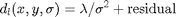
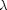

MDLFILT - Local adaptive filtering based on Minimal Description Length.
Contents
Description
Use Minimal Description Length principle to compute local adaptive neighborhoods and perform local filtering.
Local smoothness in term of variance: it estimates a local variance with the Minimal Description Length principle [Gomez00]. Coding two terms, the maximum smoothing and the minimal residual:

where  is (mainly) the assuming variance for the residual (it was modeled as a Gaussian density function).
Syntax
dl = MDLFILT(I); [dl,depth,best,scales] = MDLFILT(I,scales);
Inputs
I : an input image with size (X,Y,C), where C>1 when I is multichannel.
scales : optional variable providing the range of scales used for local adaptive computation; it is:
- either a 1D vector of lenght nsc giving the complete list of scales minsc:step:maxsc,
- or a 1D vector of lenght 3 giving [nsc,minsc,maxsc] so that the range of scales will be calculated as linspace(minsc,maxsc,nsc);
default: scales=0.5:0.1:4.
Property [propertyname propertyvalues]
'int' : optional string setting the implementation used for estimating the gaussian derivatives:
- 'kro' for the (fast) 2D Gaussian smoothing with IMGAUSSIAN proposed by D.Kroon,
- 'pey' for the implementation 2D Gaussian filtering using the function PERFORM_CONVOLUTION as proposed by G.Peyre,
- 'mat' (or 'iso', default) for a direct implementation of the 2D smoothing using FSPECIAL and IMFILTER,
'lam' : lambda of the Minimal Description Length principle: mainly, the variance for the residual; default: lambda=3000.
Outputs
dl : image of description length.
depth : depth image.
best : image of local scale indexes: it gives for each the index of its scale in the vector scales, therefore the matrix scales(best) provides with the local scales.
scales : vector of scales used; when scales is passed, the same vector scales is output.
Reference
[Gomez00] G. Gomez: "Local smoothness in terms of variance", Proc. of BMVC, vol. 2, pp. 815:824, 2000. http://citeseerx.ist.psu.edu/viewdoc/summary?doi=10.1.1.132.522
See also
Related: CONVOLUTION, ADAPTIVEFILT, GEODESICFILT, TENSANIFILT, TENSCALEDIRFILT. Called: MDLFILT_BASE.
Function implementation
function [dl,varargout] = mdlfilt(I,varargin)
parsing and checking parameters
if ~(isnumeric(I)) error('mdlfilt:inputerror','a matrix is required in input'); end error(nargchk(1, 8, nargin, 'struct')); error(nargoutchk(1, 4, nargout, 'struct')); p = createParser('MDLFILT'); % optional parameters p.addOptional('scales',0.5:0.1:4, @(x)isempty(x) || ... (nb_dims(x)==1 && length(x)>=2)); p.addParamValue('int', 'fast', @(x)ischar(x) && ... any(strcmpi(x,{'fast','matlab','conv','ani'}))); p.addParamValue('lam', 3000, @(x)isscalar(x) && x<=3000 && x>=0); p.addParamValue('ani', false, @(x)islogical(x)); p.addParamValue('rho', 3, @(x)isscalar(x) && isfloat(x) && x>=0); p.addParamValue('der', 'pey', @(x)ischar(x) && ... any(strcmpi(x,{'mat','prew','sob','pey','kro'}))); % parse and validate all input arguments p.parse(varargin{:}); p = getvarParser(p);
checking parameters and setting variable
if nargin>=2 && isempty(p.scales) % reset to the default p.scales = 0.5:0.1:4; end % treat the case where the range of scales was given as [step, min, max] if length(p.scales)==3 && p.scales(1)>p.scales(2) p.scales = linspace(p.scales(2),p.scales(3),p.scales(1)); end
main calculation
[depth,dl,best,p.scales] = mdlfilt_base(I, p.scales, p.int, p.der, p.rho, p.lam, p.ani); if nargout>=3 varargout{1} = best; if nargout==4, varargout{2} = p.scales; end; end
display
if p.disp figure, subplot(1,2,1), imshow(rescale(depth,0,1)), axis image off; title('MDL filtered image'); subplot(1,2,2), imshow(rescale(dl,0,1)), axis image off; title('description length'); end
end % end of mdlfilt